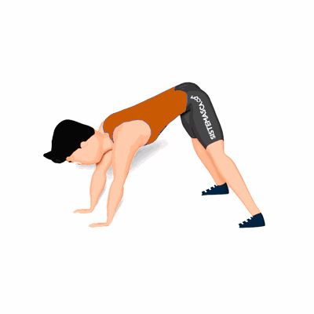

Alongamento de Cadeia Posterior em 4 Apoios

O exercício trabalha o alongamento da cadeia posterior, auxiliando na execução de atividades físicas e atividades diárias.
Ficha Técnica
Tipo: Alongamento
Grupo Muscular: Costas
Aparelho: Nenhum
Músculos: Nenhum
Como realizar
- Fique em posição de 4 apoios com pernas e braços estendidos;
- Leve uma das mãos em direção ao calcanhar da perna oposto ao braço e segure;
- Mantenha essa posição por alguns segundos e retorne a posição inicial;
- Agora com a outra mão realize os mesmos movimentos;
- Execute o exercício alternando entre as mãos pela quantidade de vezes prescrito pelo professor(a).
 RC STORE
RC STORE